Для тех у кого macbook или что то unix подобное стоит на ПК, вам придётся «поднять» виртуальную машину с windows и коннектиться туда, либо как то ещё выкрутиться. Главное в этой работе отработать работу с протоколами FTP и SSH.
FTP - стандартный протокол, предназначенный для передачи файлов по TCP-сетям (например, Интернет). Использует 21-й порт. FTP часто используется для загрузки сетевых страниц и других документов с частного устройства разработки на открытые сервера хостинга.
Протокол построен на архитектуре «клиент-сервер» и использует разные сетевые соединения для передачи команд и данных между клиентом и сервером. Пользователи FTP могут пройти аутентификацию, передавая логин и пароль открытым текстом, или же, если это разрешено на сервере, они могут подключиться анонимно. Можно использовать протокол SSH для безопасной передачи, скрывающей (шифрующей) логин и пароль, а также шифрующей содержимое.
SSH - сетевой протокол прикладного уровня, позволяющий производить удалённое управление операционной системой или для передачи файлов. Но в отличие от, например, FTP, шифрует весь трафик, включая и передаваемые пароли. SSH допускает выбор различных алгоритмов шифрования. SSH-клиенты и SSH-серверы доступны для большинства сетевых операционных систем. Таким образом, можно не только удалённо работать на компьютере через командную оболочку, но и передавать по шифрованному каналу звуковой поток или видео. Большинство хостинг-провайдеров за определённую плату предоставляют клиентам доступ к их домашнему каталогу по SSH. Это может быть удобно как для работы в командной строке, так и для удалённого запуска программ (в том числе графических приложений).
Для начала настроим саму виртуальную машину. Заходим в меню Файл->Настройки-> Сеть. Далее смотрим, чтобы все было приблизительно так же, если чего-то нету, то создаем и прописываем. Тут виртуальный сетевой адаптер для виртуальной машины.
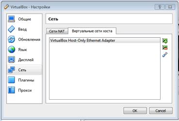Настройки конкретного virtualbox Ethernet adapter’а:
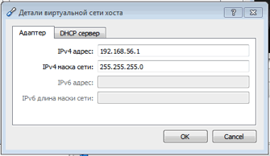 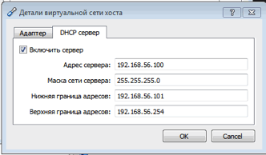Идём в настройки самой виртуальной машины, на вкладку сеть, и меняем «тип подключения» на виртуальный адаптер хоста, который был выше.
После данных манипуляций у вас пропадёт интернет на виртуалке, так что как закончили, можно все вернуть как было, то есть просто поменять тип подключения как было
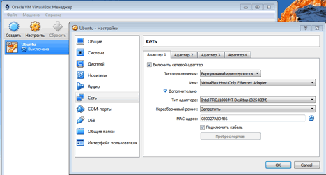Далее запускаем саму виртульную машину и ставим себе ssh вот такой командой.
Настройка SSH
Настройки хранятся в файле /etc/ssh/sshd_config. Далее будет список параметров которые желательно изменить:
"Port 22" - номер порта по умолчанию. Желательно установить в другое значение, т.к. первым делом ломятся на этот порт, Конечно, и другие порты тоже сканируют, но лишняя защита не помешает.
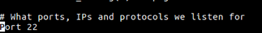"PermitRootLogin no" - обязательно установите значение в "no". Это запрещает логинится рутом через ssh.
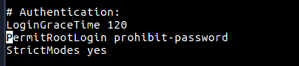AllowUsers name_user - этого параметра нет в конфиге, допишите его. name_user - это имя пользователя в системе, которому разрешен вход по ssh.К имени можно добавить ip-адрес - name_user@IP Такой параметр разрешит логинится только пользователю name_user и только при условии, что он подключается с указанного IP.
PermitEmptyPasswords no - Запретить пустые пароли.
На этом примитивная настройка закончилась. После произведенных настроек, перезапускаем демон(службу/фоновый процесс) sshd:
sudo /etc/init.d/ssh restart
Или так
service ssh restart
Далее проверяем его статус (service ssh status), должен быть запущен, если он не запущен запустите его командой service ssh start
Далее командой ifconfig смотрим какой у нас адрес, в моём случае это 192.168.56.101, запомните его, по нему позже будем коннектиться к серваку.
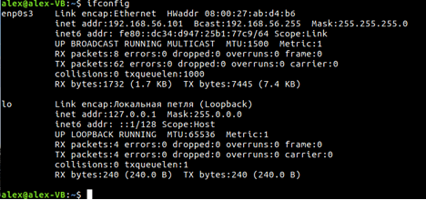Создаём, а можем и не создать, себе нового пользователя, чтобы потестить ssh (лучше укажите имя просто из букв, без спец символов, не делайте как я).
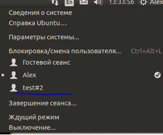Скачиваем программу, с помощью неё будем коннектиться к нашему серверу (точнее к нашей виртуальной машине)
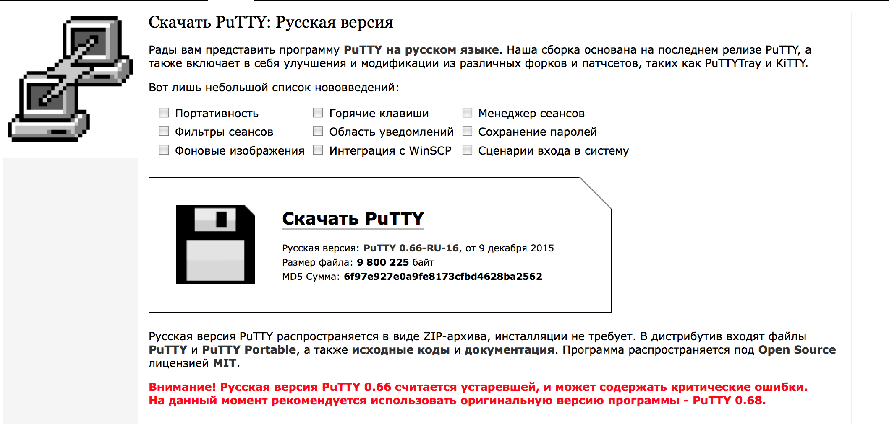PuTTY — свободно распространяемый клиент для различных протоколов удалённого доступа, включая SSH, Telnet, rlogin. Также имеется возможность работы через последовательный порт. PuTTY позволяет подключиться и управлять удаленным узлом (например, сервером). В PuTTY реализована только клиентская сторона соединения — сторона отображения, в то время как сама работа выполняется на другой стороне.(с)wiki
Скачиваем архив и распаковываем его. Нас интересует putty portable, хотя можно просто putty. Вон, даже исходники есть.
Заходим в папку и ищем exe-шник «putty_portable.exe» и запускаем его.
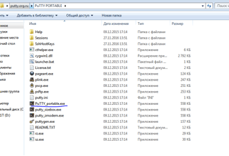Вот такой интерфейс, как видно по меню слева, программа имеет массу настроек и многофункциональна.
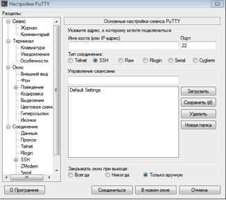Для коннекта указываем - имя_пользователя_на_сервере@адрес_сервера. То есть в моем случае test2@192.168.56.101. Так же в некоторых случаях за место ip, может быть какой то домен, то есть: Test2@mpt.edu.ru, смысл в принципе тот же. Если вы меняли порт в настройках ssh сервера на забываем его поменять и тут.
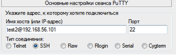Если все верно указали, то у вас спросит пароль пользователя, вводим его (тот самый пароль, который в системе установлен для входа).
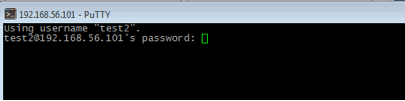Ввели пароль и решительно зашли. Вообще данный протокол может использоваться почти для чего угодно, мы можем как управлять самой машиной, что то делать, настраивать, да хоть программировать.
Статья о SSHТеперь немного инфы, для тех у кого mac или вдруг unix подобная система стоит. Вы у себя будете должны «поднять» виртуальную машину с windows и коннектиться туда (либо как то ещё выкрутиться).
Пользователи операционных систем Mac OS X или Linux могут использовать стандартное приложение terminal для подключения к виртуальному серверу по SSH протоколу. Для подключения к Вашему виртуальному серверу используйте следующую команду (измените 188.127.236.62 на IP адрес вашего сервера и имя пользователя тоже поменяйте):
ssh root@188.127.236.62
Теперь непосредственно работа с SSH.
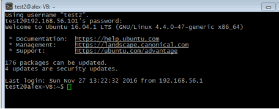Как гласит история команд, когда то был создан маленький файл, будем его скачивать.
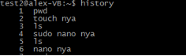Скачивать будем на винду с линукса:
Вот скаченный файл:
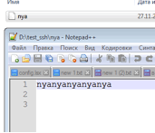Теперь скачаем всю домашнюю директорию пользователя. Команда особо не поменялась, только добавился флаг –r , которой говорит о рекурсивности команды, чтобы она обрабатывала все папки и подпапки. Вывод я немного опущу.
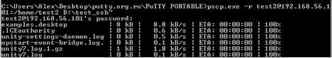Вот что мы скачали, побилась кодировка в названиях файлов, но это особо не важно. Кстати заметьте, загрузились даже скрытые файлы (которые с точной в имени).
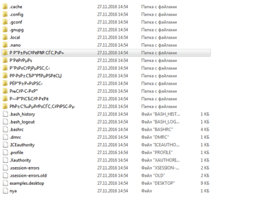Теперь будем заливать файлы на сервак, собственно есть файл.
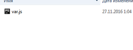Вот так выглядит команда.
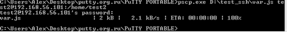Смотрим через putty, что файл скачался.
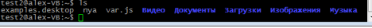Ну и напоследок поработатет с графическим аналогом программы под windows, winscp.
Скачивается тутВыглядит вот так, особо не замысловато. Наша задача подключиться к нашей виртуальной машине. Выбираем "новое подключение" и вводим ваши данные.
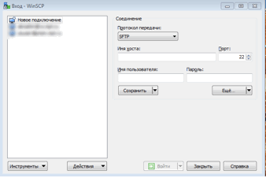И подключаемся.
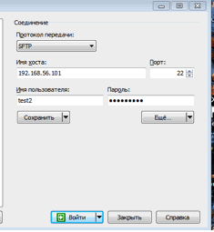Собственно вот, все нормально, подключились.
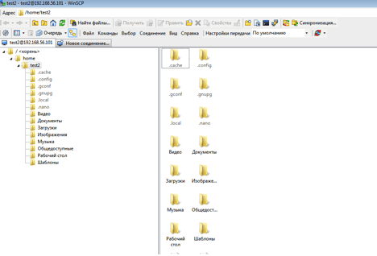